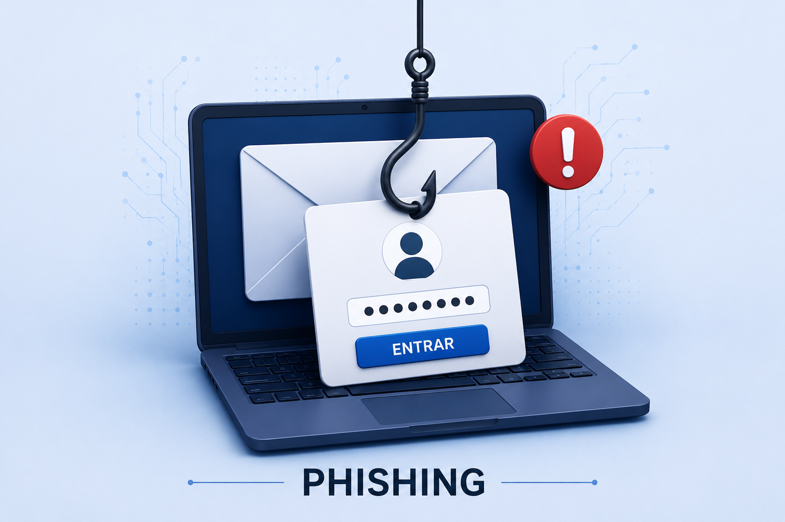
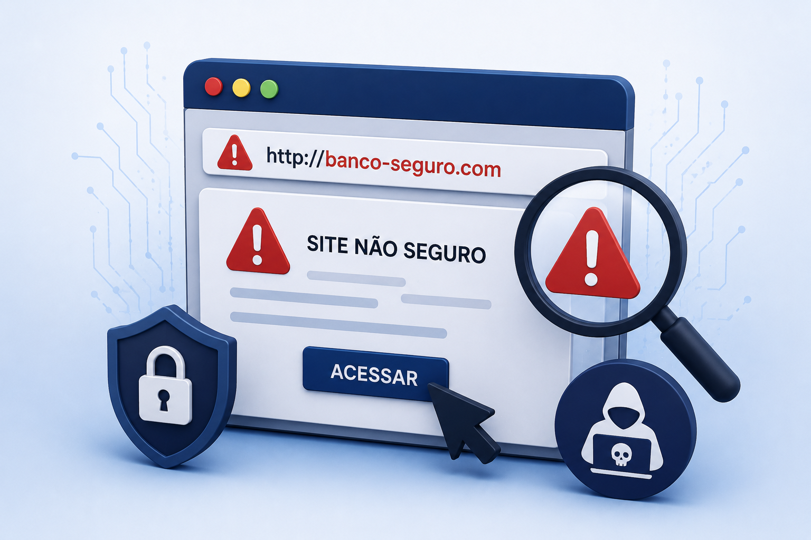
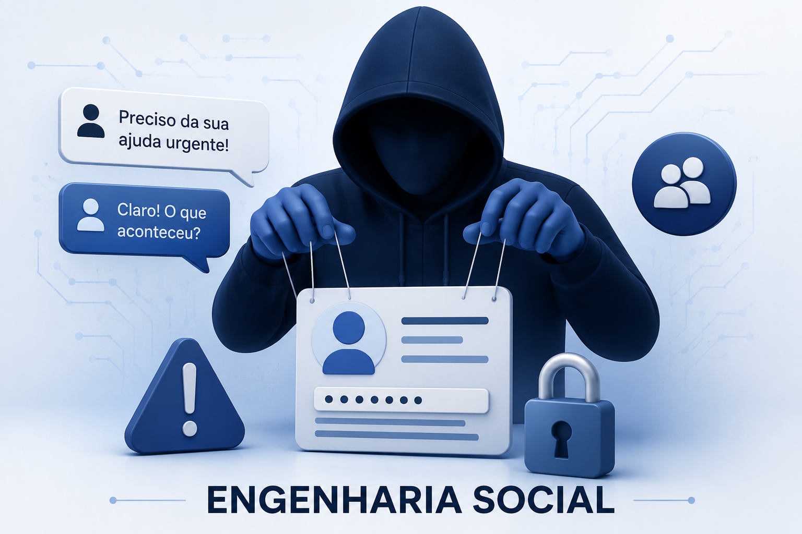

Os golpes financeiros cresceram junto com a popularização da internet, dos bancos digitais e do Pix. Criminosos utilizam mensagens falsas, links maliciosos e engenharia social para enganar pessoas e roubar dados ou dinheiro. Por isso, conhecer os principais golpes e aprender práticas básicas de segurança digital tornou-se essencial no dia a dia.
Golpe do Pix
O golpe do Pix é um dos crimes digitais mais comuns atualmente. Os criminosos utilizam comprovantes falsos, QR Codes adulterados ou pedidos urgentes para convencer a vítima a realizar transferências. Em muitos casos, os golpistas se passam por familiares, empresas ou vendedores para ganhar confiança rapidamente.
Phishing

Phishing é uma técnica usada para roubar informações pessoais, como senhas, números de cartão e dados bancários. Os criminosos enviam e-mails, mensagens ou sites falsos que imitam empresas conhecidas. O objetivo é fazer a vítima clicar em links perigosos e fornecer informações
Links Falsos

Links falsos são endereços criados para levar usuários a páginas fraudulentas. Muitas vezes eles parecem idênticos aos sites oficiais de bancos, lojas ou redes sociais. Ao clicar nesses links, a vítima pode ter seus dados roubados ou instalar programas maliciosos sem perceber.
Engenharia social

Técnica usada por criminosos para manipular pessoas e conseguir informações confidenciais, como senhas, códigos bancários e dados pessoais. Em vez de atacar sistemas diretamente, os golpistas exploram a confiança, o medo ou a urgência da vítima para convencê-la a fornecer informações ou realizar ações perigosas. Esse tipo de golpe pode acontecer por mensagens, ligações, redes sociais ou aplicativos de conversa.
Clonagem de WhatsApp
Nesse golpe, criminosos conseguem acesso à conta de WhatsApp da vítima e passam a pedir dinheiro para familiares e amigos. Normalmente, os golpistas utilizam códigos de verificação enviados por SMS para assumir o controle da conta. Para evitar esse tipo de golpe, é importante nunca compartilhar códigos recebidos no celular e ativar a verificação em duas etapas no aplicativo
Dicas de Segurança
Utilize senhas fortes e diferentes em cada conta
Nunca informe códigos recebidos por SMS
Evite acessar aplicativos bancários em rede Wi-fi pública
Atualize aplicativos e sistemas regularmente
Desconfie de mensagens urgentes pedindo dinheiro
Lembre-se
Golpes
Como funciona
Como evitar
Golpe do Pix
Os criminosos utilizam comprovantes falsos.
Confirmar saldo
Phishing
Links e páginas falsas roubam dados pessoais
Verificar URLs e evitar links suspeitos
Links falsos
Sites imitam páginas oficiais de bancos e empresas